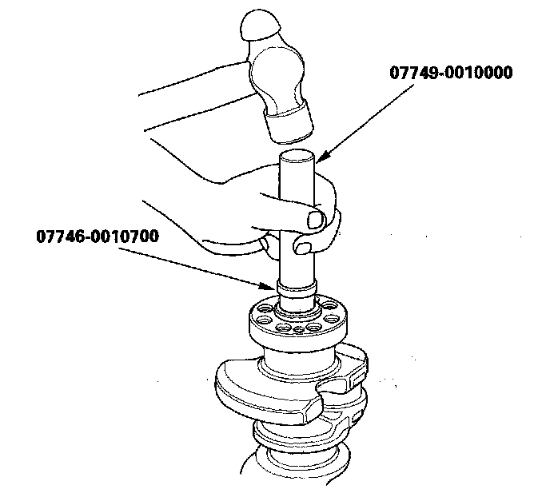
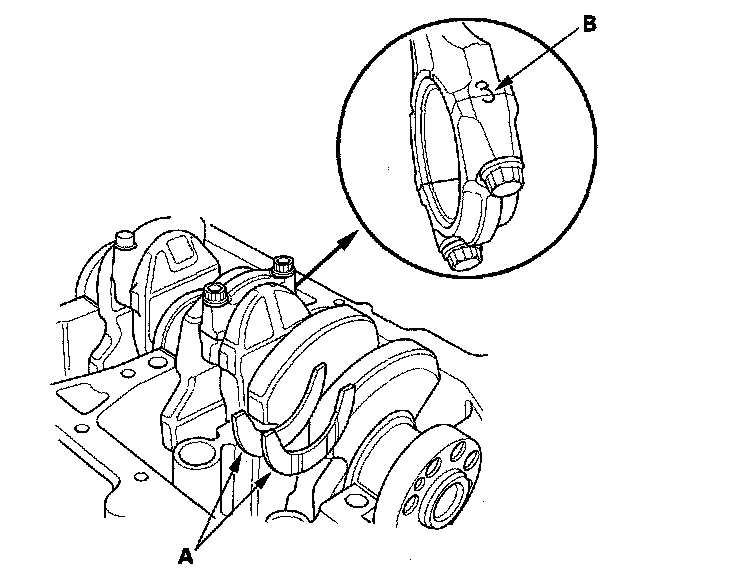
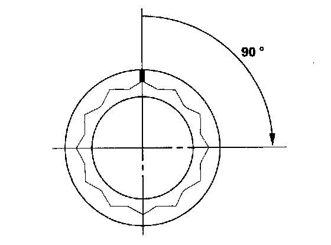
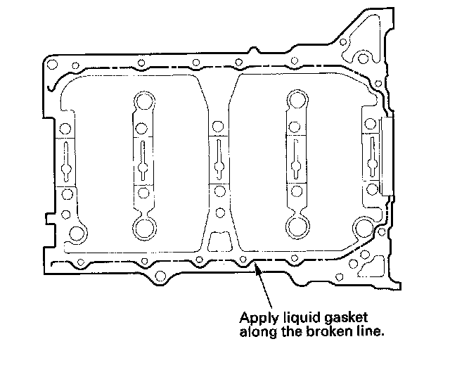
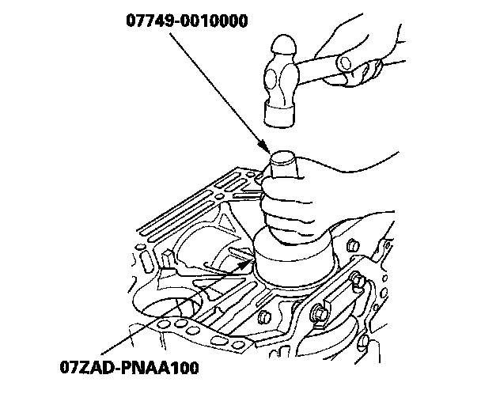
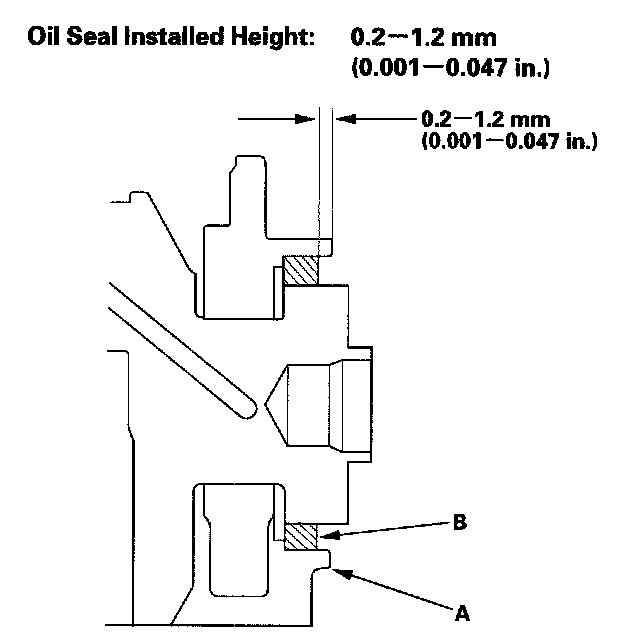
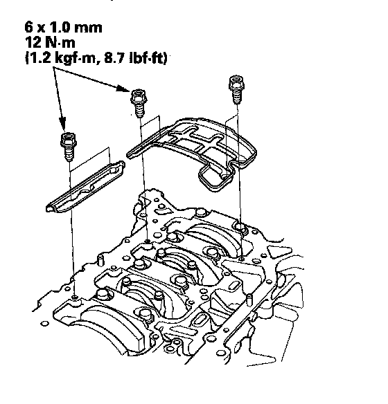

Crankshaft Installation
Crankshaft InstallationSpecial Tools Required
^ Driver 07749-0010000
^ Attachment, 24 x 26 mm 07746-0010700
^ Oil seal driver attachment, 96 mm 07ZAD-PNAA100
1. Install the crankshaft end bushing when replacing the crankshaft.
Using the special tools, drive in the crankshaft end bushing until the special tools bottom against the crankshaft.

2. Check the connecting rod bearing clearance with plastigage.
3. Check the main bearing clearance with plastigage.
4. Install the bearing halves in the engine block and connecting rods.
5. Apply a coat of new engine oil to the main bearings and rod bearings.
6. Hold the crankshaft so that rod journal No. 2 and rod journal No. 3 are straight up, and lower the crankshaft into the engine block.
7. Apply new engine oil to the thrust washer surfaces. Install the thrust washers (A) in the No. 4 journal of the engine block.

8. Inspect the connecting rod bolts.
9. Apply engine oil to the threads of the connecting rod bolts.
10. Seat the rod journals into connecting rod No. 1 and connecting rod No. 4. Line up the mark (B) on the connecting rod and cap, then install the caps and bolts finger-tight.
11. Rotate the crankshaft clockwise, and seat the journals into connecting rod No. 2 and connecting rod No. 3. Line up the mark on the connecting rod and cap, then install the caps and bolts finger-tight.
12. Tighten the connecting rod bolts to 29 N-m (3.0 kgf-m, 22 lbf-ft).
13. Tighten the connecting rod bolts an additional 90°.
NOTE: Remove the connecting rod bolt if you tightened it beyond the specified angle, and go back to step 8 of the procedure. Do not loosen it back to the specified angle.

14. Remove all of the old liquid gasket from the lower block mating surfaces, bolts, and bolt holes.
15. Clean, and dry the lower block mating surfaces.
16. Apply liquid gasket, P/N 08717-0004, 08718-0001, 08718-0002, 08718-0003, or 08718-0009, evenly to the engine block mating surface of the lower block.

NOTE: Do not install components if too much time has passed after applying the liquid gasket (for P/N 08718-0002, no more than 4 minutes, for all others, no more than 5 minutes). Instead, remove the old residue and reapply the liquid gasket.
17. Put the lower block on the engine block.
18. Apply new engine oil to the threads of the bearing cap bolts.
19. Tighten the bearing cap bolts, in sequence, to 29 N-m (3.0 kgf-m, 22 lbf-ft).

20. Tighten the bearing cap bolts an additional 56°.

21. Tighten the 8 mm bolts, in sequence, to 22 N-m (2.2 kgf-m, 16 lbf-ft).

22. Use the special tools to drive a new oil seal squarely into the engine block to the specified installed height.

23. Measure the distance between the engine block (A) and oil seal (B).

24. Install the baffle plates.

25. Install the oil pump.
26. Install the oil pan.
27. Install the cylinder head.
28. Install the flywheel, clutch disc, and pressure plate.
29. Install the transmission.
30. Install the engine assembly.
NOTE: Whenever any crankshaft or connecting rod bearing is replaced, it is necessary after reassembly to run the engine at idle speed until it reaches normal operating temperature, then continue to running it for about 15 minutes.